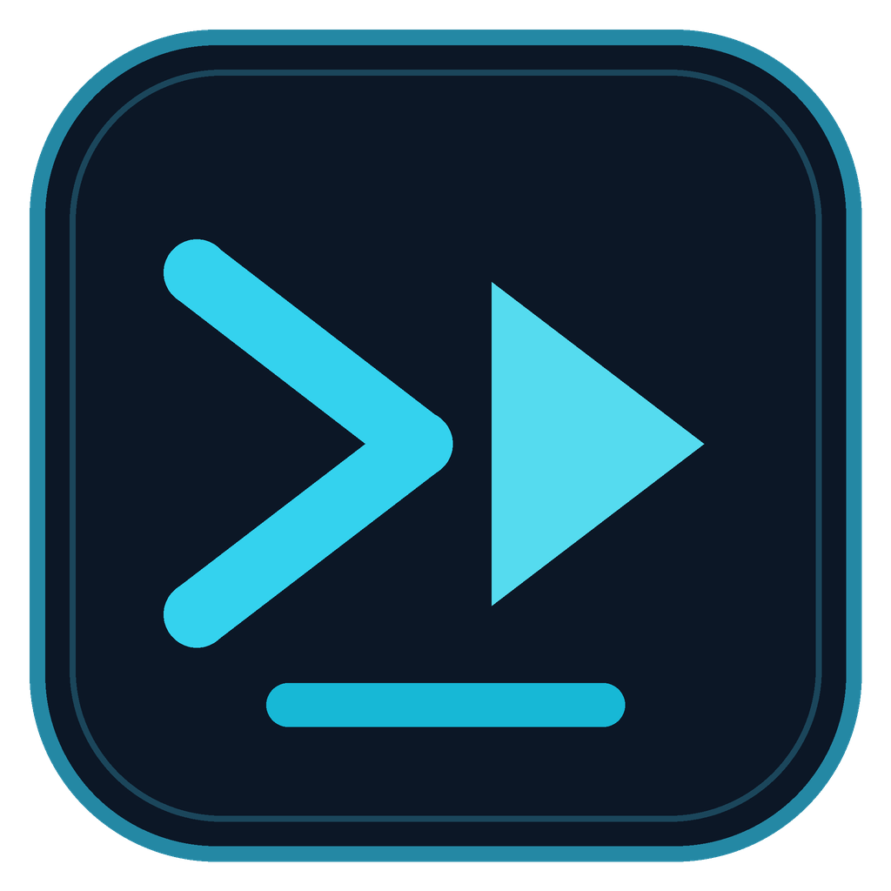

Downloads flexíveis
Vídeo, áudio, playlists e canais de sites compatíveis com o yt-dlp. Ajuste formato e qualidade antes de iniciar.

Firaw VidBee Ver na Microsoft StoreFIRAWYNIX / MEDIA
Baixe vídeo e áudio, acompanhe filas e mantenha uma biblioteca organizada. O Firaw - VidBee traz a experiência do VidBee para o visual Firawynix, no desktop e em uma instalação web local.
Instalação gratuita. Sem conta para downloads locais. Use apenas conteúdo que você tem direito de salvar.
UM FLUXO COMPLETO
Vídeo, áudio, playlists e canais de sites compatíveis com o yt-dlp. Ajuste formato e qualidade antes de iniciar.
Veja o andamento, repita tarefas, encontre arquivos e mantenha downloads organizados em uma biblioteca local.
Adicione fontes e deixe novos conteúdos entrarem na fila automaticamente conforme as opções escolhidas.
Importe mídia local, gere transcrições pesquisáveis e exporte legendas. Recursos de IA usam o provedor configurado por você.
ESCOLHA ONDE USAR
O aplicativo desktop oferece a experiência completa de mídia e transcrição. A versão web usa um servidor local e mantém downloads, histórico, opções e assinaturas no computador que hospeda a API.
Disponível gratuitamente na Microsoft Store. Você também pode usar o instalador ou a versão portátil gerados localmente.
Instalar pela Microsoft StoreBaixar instalador WindowsBaixar versão portátilAbra o aplicativo no navegador enquanto o serviço local estiver ativo.
Abrir em localhost:3000TRANSPARÊNCIA
Firaw - VidBee é uma adaptação visual do VidBee, publicado por nexmoe sob licença MIT. O motor de downloads usa yt-dlp e FFmpeg. O projeto não remove proteção DRM nem hospeda conteúdo de terceiros.